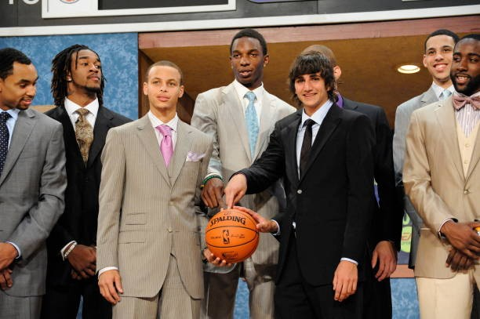
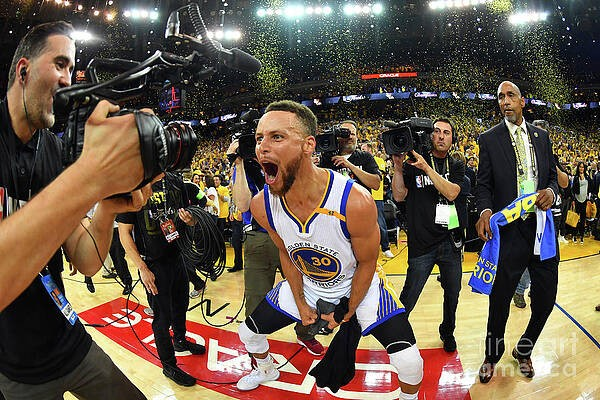
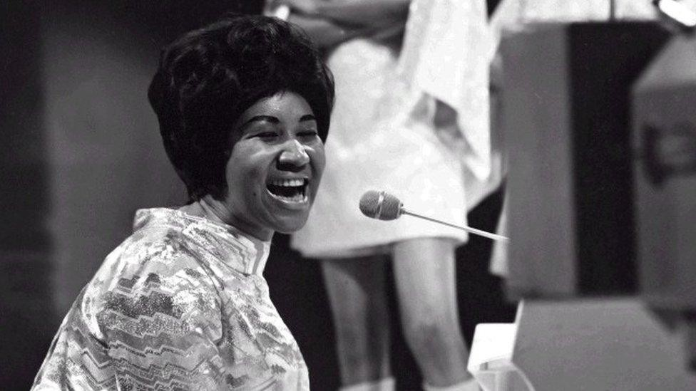
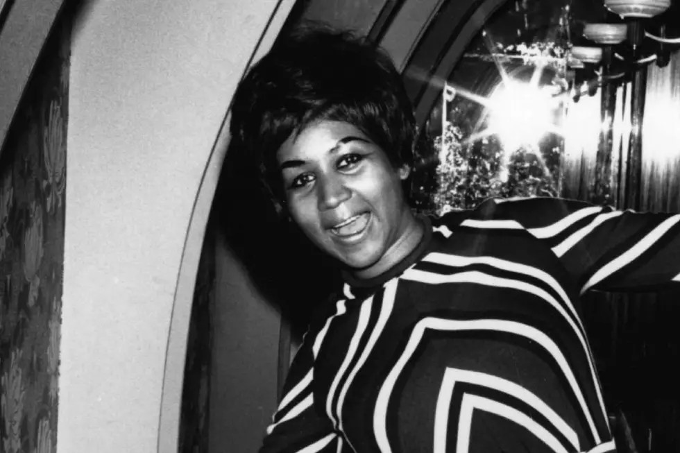
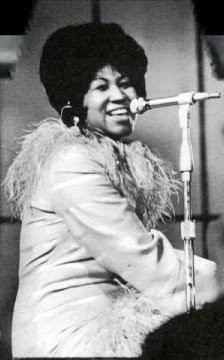
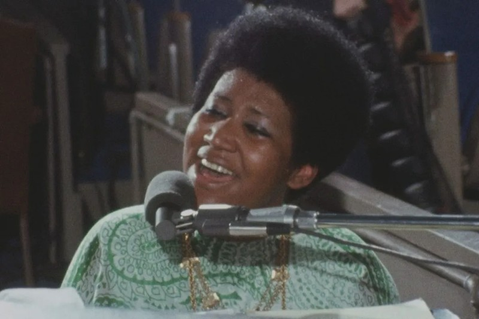
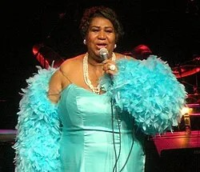
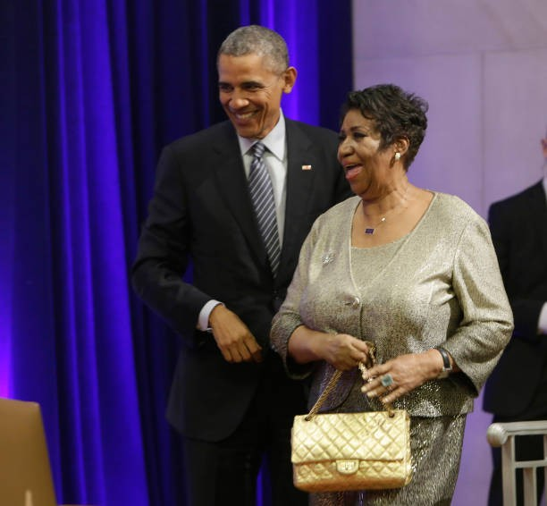
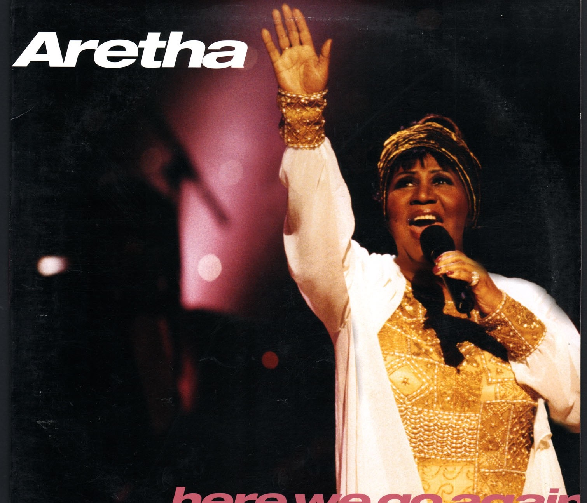

Clique em um ano para ver os detalhes. Role a página para ver os eventos aparecerem.

Depois de brilhar na Davidson College, Curry é escolhido pelos Golden State Warriors no draft e estreia na NBA.
Primeiro título da NBA com os Warriors e primeiro prêmio de MVP da temporada.
Curry é eleito MVP por unanimidade e faz 402 bolas de três pontos em uma temporada, um recorde.

Os Warriors conquistam mais um título (o terceiro de Curry, depois de 2015 e 2017).
Quarto título da NBA, e Curry é eleito o MVP das Finais pela primeira vez.
No All-Star Game de 2022, ele fez 16 bolas de três pontos, um recorde do jogo, e foi eleito MVP.
Medalha de ouro nas Olimpíadas de Paris com a seleção dos Estados Unidos.
Clique em um ano para ver os detalhes. Role a página para ver os eventos aparecerem.

Nasce em Memphis, Tennessee, e cresce em Detroit, cantando no coral da igreja do pai.

Assina com a gravadora Columbia e começa a carreira fora da igreja.

Na Atlantic Records, grava "Respect", "Chain of Fools" e "Natural Woman" e vira estrela mundial.

Grava ao vivo o álbum gospel "Amazing Grace", numa igreja em Los Angeles.

Torna-se a primeira mulher a entrar no Hall da Fama do Rock and Roll.

Canta na posse do presidente Barack Obama, mais um grande momento da carreira.

Morre em 16 de agosto, em Detroit, aos 76 anos, deixando um enorme legado.